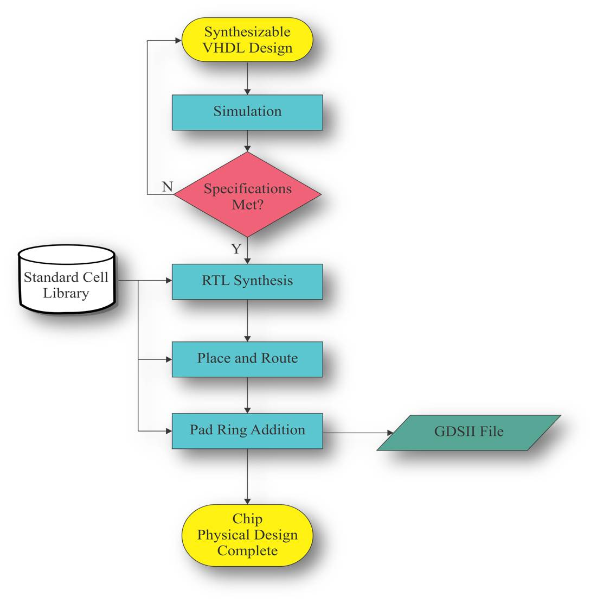

Welcome to Website of Prof. Saraju P. Mohanty
NSF Award DUE-0942629:
Introduction of Nanoelectronics Courses in Undergraduate Computer Science and
Computer Engineering Curricula
|
|
Project Scope
For
efficient design of nanoelectronic circuits and systems and their design space
exploration, understanding of the devices and design methodologies are crucial.
However, there is a lack of skilled manpower in this field. To bridge these
gaps, this project proposes a set of courses to train undergraduate students to
achieve expertise in nanotechnology (with emphasis on nanoelectronics). This
proposal aims to develop a simulation-based project-oriented curriculum
to bootstrap a nanotechnology track among undergraduate engineering programs,
with initial emphasis on computer science and engineering. The project will
lead to the development of courses on nanotechnology (with emphasis on
nanoelectronics), experimental modules for each of the courses, and web-based
courseware for wider distribution of the materials.
The goal of the proposal is
to investigate simulation‐based
project‐oriented teaching and education to
bootstrap a nanotechnology track among multidisciplinary undergraduate
engineering programs. This will be achieved by developing new nanotechnology
courses, course modules, experiments, web-based courseware and facilitate their
wider dissemination to meet the shortage of skilled man power. The proposal has
the following objectives:
1) Development
of undergraduate courses in nanotechnology with emphasis on nanoelectronics to
train man power.
2) Development
of experimental modules for each of the courses to provide hands-on experience
to the undergraduate students.
3) Development
of dissemination methods including web-based courseware for wider distribution
of the materials.
4) Development
of assessment methods for the proposed courses and experiments.
5) Integration
of the course materials in the engineering curricula at UNT and TAMU.
6) Facilitate
integration of course materials in courses such as VLSI, nanoelectronics,
nanotechnology, and engineering curricula outside the state of Texas.
Project Personnel
Faculty:
- Saraju P. Mohanty (Principal Investigator) --
Contributions to the Project include: Co-ordinating
the overall project, preparing new course materials and integrating them
in new and existing courses, generating new ideas and themes for
publication, writing the research outcomes as papers, and making
conference presentations.
- Elias Kougianos (Co-Principal Investigator) -- Contributions
to the Project include: Building the infrastructure, preparing new course
materials, training students on tools, and writing the research outcomes
as papers.
Students:
The contributions
include -- Implementing the ideas, generating the results, compiling results
for publication, and making conference presentations.
- Oghenekarho Okobiah: Ph. D. (Computer
Science and Engineering) student.
Project Publications
- J. Singh, S. P. Mohanty, and D. K. Pradhan, Robust SRAM Designs and Analysis, Springer, 2012, ISBN: 1461408172 and 978-1461408178.
- S. P. Mohanty, “Memristor: From Basics to Deployment”, IEEE Potentials, Volume 32, No. 3, May/June 2013, pp. 34--39.
- O. Garitselov, S. P. Mohanty, and E. Kougianos, “A Comparative Study of Metamodels for Fast and Accurate Simulation of Nano-CMOS Circuits”, IEEE Transactions on Semiconductor Manufacturing (TSM), Vol. 25, No. 1, February 2012, pp. 26--36.
- S. P. Mohanty and E. Kougianos, “DOE-ILP Assisted Conjugate-Gradient Optimization of High-κ/Metal-Gate Nano-CMOS SRAM”, IET Computers & Digital Techniques (CDT), Vol. 6, No. 4, July 2012, pp. 240--248.
- S. P. Mohanty, E. Kougianos, and O. Okobiah, “Optimal Design of a Dual-Oxide Nano-CMOS Universal Level Converter for Multi-Vdd SoCs”, Springer Analog Integrated Circuits and Signal Processing Journal, Vol. 72, No. 2, August 2012, pp. 451--467.
- S. P. Mohanty, J. Singh, E. Kougianos, and D. K. Pradhan, “Statistical DOE-ILP Based Power-Performance-Process (P3) Optimization of Nano-CMOS SRAM”, Elsevier The VLSI Integration Journal, Vol. 45, No. 1, January 2012, pp. 33--45.
- S. Banerjee, J. Mathew, S. P. Mohanty, D. K. Pradhan, and M. J. Ciesielski, "A Variation-Aware TED-Based Approach for Nano-CMOS RTL Leakage Optimization", Special Issue on VLSI Design 2011, ASP Journal of Low Power Electronics (JOLPE), Vol. 7, No. 4, December 2011, pp. 471--481.
- O. Okobiah, S. P. Mohanty, and E. Kougianos, “Geostatistics Inspired Fast Layout Optimization of Nanoscale CMOS Phase Locked Loop”, in Proceedings of the 14th IEEE International Symposium on Quality Electronic Design (ISQED), 2013, pp. 562--567. (blind review)
- G. Zheng,S. P. Mohanty, E. Kougianos, and O. Okobiah, “Polynomial Metamodel Integrated Verilog-AMS for Memristor-Based Mixed-Signal System Design”, in Proceedings of the 56th IEEE International Midwest Symposium on Circuits & Systems (MWSCAS), 2013, pp. 916--919.
- D. Ghai, S. P. Mohanty, and G. Thakral, “Comparative Analysis of Double Gate FinFET Configurations for Analog Circuit Design”, in Proceedings of the 56th IEEE International Midwest Symposium on Circuits & Systems (MWSCAS), 2013, pp. 809--812.
- O. Okobiah, S. P. Mohanty, E. Kougianos, and O. Garitselov, “Kriging-Assisted Ultra-Fast Simulated-Annealing Optimization of a Clamped Bitline Sense Amplifier”, in Proceedings of the 25th IEEE International Conference on VLSI Design (VLSID), pp. 310--315, 2012 (blind review, 71 papers accepted out of 223 submissions, acceptance rate -- 31.8%).
- O. Garitselov, S. P. Mohanty, and E. Kougianos, “Fast-Accurate Non-Polynomial Metamodeling for nano-CMOS PLL Design Optimization”, in Proceedings of the 25th IEEE International Conference on VLSI Design (VLSID), pp. 316--321, 2012 (blind review, 71 papers accepted out of 223 submissions, acceptance rate -- 31.8%).
- O. Okobiah, S. P. Mohanty, and E. Kougianos, "Ordinary Kriging Metamodel-Assisted Ant Colony Algorithm for Fast Analog Design Optimization", in Proceedings of the 13th IEEE International Symposium on Quality Electronic Design (ISQED), pp. 458--463, 2012 (blind review).
- G. Zheng, S. P. Mohanty, E. Kougianos, and O. Garitselov, “Verilog-AMS-PAM: Verilog-AMS integrated with Parasitic-Aware Metamodels for Ultra-Fast and Layout-Accurate Mixed-Signal Design Exploration”, in Proceedings of the 21st ACM/IEEE Great Lakes Symposium on VLSI (GLSVLSI), pp. 351--356, 2012 (blind review, 23 full and 18 short papers accepted out of 144 submissions, acceptance rate -- 28.5%).
- S. P. Mohanty, E. Kougianos, O. Garitselov, and J. M. Molina, “Polynomial-Metamodel Assisted Fast Power Optimization of Nano-CMOS PLL Components”, in Proceedings of the Forum on specification and Design Languages (FDL), pp. 233--238, 2012.
- G. Zheng, S. P. Mohanty, and E. Kougianos, “Design and Modeling of a Continuous-Time Delta-Sigma Modulator for Biopotential Signal Acquisition: Simulink Vs Verilog-AMS Perspective”, in Proceedings of the 3rd International Conference on Computing, Communication and Networking Technologies (ICCCNT), pp. 1--6, 2012.
- S. P. Mohanty and E. Kougianos, “PVT-Tolerant 7-Transistor SRAM Optimization via Polynomial Regression”, in Proceedings of the 2nd IEEE International Symposium on Electronic System Design (ISED), pp. 39--44, 2011 (blind review, 62 papers accepted out of 146 submissions, acceptance rate – 42.4%).
- O. Garitselov, S. P. Mohanty, E. Kougianos, and P. Patra, “Bee Colony Inspired Metamodeling Based Fast Optimization of a Nano-CMOS PLL”, in Proceedings of the 2nd IEEE International Symposium on Electronic System Design (ISED), pp. 6--11, 2011 (blind review, 62 papers accepted out of 146 submissions, acceptance rate – 42.4%).
- O. Garitselov, S. P. Mohanty, and E. Kougianos, “Fast Optimization of Nano-CMOS Mixed-Signal Circuits Through Accurate Metamodeling”, in Proceedings of the 12th IEEE International Symposium on Quality Electronic Design (ISQED), pp. 405--410, 2011 (blind review, 92 regular papers and 34 poster papers accepted out of 290 submissions, acceptance rate - 43.4%).
- O. Garitselov, S. P. Mohanty, E. Kougianos, and P. Patra, “Nano-CMOS Mixed-Signal Circuit Metamodeling Techniques: A Comparative Study”, in Proceedings of the 1st IEEE International Symposium on Electronic System Design (ISED), pp. 191--196, 2010 (blind review, 41 papers accepted out of 120 submissions, acceptance rate – 34.1%).
- E. Kougianos, S. P. Mohanty, and P. Patra, “Digital Nano-CMOS VLSI Design Courses in Electrical and Computer Engineering Through Open‐Source/Free Tools”, in Proceedings of the 1st IEEE International Symposium on Electronic System Design (ISED), pp. 265--270, 2010.
{kind=link}
These outcomes will be helpful for different educational
institutes to decide what laboratory setup will be used depending on their
computational resources to ensure best utilization of the resource and minimal
operational cost.
| Client-Server Model for lab set up. High performance server has all the softwares. The clients are essentially dumb terminals. The next slide has highlights of this model. |
Workstation-Only Model of Lab Setup (no picture included). Mixed-Mode Model of lab set up. In this usage model the server handles authentication and storage but the execution of the tools can take place locally, on the workstation, or remotely, on the server. The next slide has highlights of this model. |
| Front-End of the Design Flow using Free/Open Source Tools. |
Back-End of the Design Flow using Free/Open Source Tools. |
|  |
A 45nm Datapath Component Library:
This outcome will be used for architectural level design space exploration.| 45nm CMOS Datpath Component Library for Two Oxide Thickness |
|||||||||||||||||||||||||||||||||||||||||||||||||||||||||||||||||||||||||||||||||||||||||||||||
|
|||||||||||||||||||||||||||||||||||||||||||||||||||||||||||||||||||||||||||||||||||||||||||||||
Nanoscale Circuit Leakage Architectural Leavel Optimization Flow. |
|||||||||||||||||||||||||||||||||||||||||||||||||||||||||||||||||||||||||||||||||||||||||||||||
A Nanoscale CMOS Based SRAM Design Optimization Flow:
This outcome will be used for circuit level optimization of SRAMs. The major issue of process variation in the nanoscale circruits is mitigated by using this design flow.| Process Variation Tolerant design flow for nano-CMOS SRAM |
Leakage Path in the Nano-CMOS based SRAM: Hold State |
| Nano-CMOS based SRAM: Setup for SNM Measurement |
Sampling Methods for Nanoscale CMOS Based Mixed-Signa Circuit Design Space:
This outcome will be used for fast amd yet accurate design space sampling of complex nanoscale CMOS based mixed-signal circuits. The example following is provided for a simple ring oscillator circuit designed using 45nm CMOS technology.| Computer-Aided Design (CAD) Tool Flow during Design Sampling |
|
 |
|
| Ring Oscillator: 45nm CMOS Schematic. | Ring Oscillator: 45nm CMOS Layout. |
 |
|
LC VCO: 180nm CMOS Schematic. |
LC VCO: 180nm CMOS Layout |
Memristor-Based Schmitt Trigger Oscillator Design:
Courses Related to the Project
Adavced Topics in VLSI Systems or Topics in VLSI Systems:The above course is designed as a umbrella course for undergraduate and graduate students combined. The syllabus of this course can be tuned to give nanoelectronics or nanotechnology flavor. The course can be tuned for both digital and mixed-signal circuits and systems. Students are allowed to repeat the course upon the permission of the instructor.
- Current Conduction Mechanisms in Nano-CMOS Devices
- Power Dissipation in nano-CMOS Logic Gates
- Origin and Effect of Process Variations
- Nano-CMOS Power, Leakage, and Delay Modeling and Estimation
- Architecture-Level Power, Leakage, and Delay Estimation for Nano-CMOS
- Power and Leakage Reduction Fundamentals
- CMOS Design Flow
- General Purpose Processor Design
- Inside of a Circuit Simulator
- High-Level Synthesis Fundamentals
- Power Estimation at Transistor and Logic Levels
- Energy or Average Power Reduction Techniques
- Peak Power Reduction Techniques
- Transient Power Reduction Techniques
- Leakage Power Reduction Techniques
- Design of Analog and Mixed-Signal Systems: VCO, PLL, Voltage Converters.
Lecture Slides: Theme: “Nanoscale Mixed-Signal System Design”. These slides can be used by other faculty to offer similar courses).
- VLSI Overview: from old era to nanoscale era
- Nano-CMOS Issues
- Power Dissipation in CMOS circuits
- Gate Leakage in sub-65nm CMOS circuits
- How SPICE simulator works
- Sigma-Delta Modulator
- Components of Phase Locked Loop (PLL)
- Process Variation Tolerant Sense Amplifier
- Ultra-Fast Design of Ring Oscillator
- Efficient Design of Current-Starved VCO
- Efficient Design of Flash ADC
- Efficient SRAM Circuit Design
Home |
Last updated on 02 Sep 2013 (Mon). © Saraju P. Mohanty